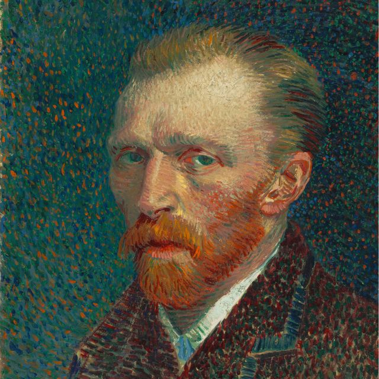
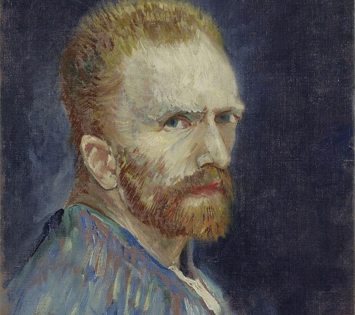

Biography
Biography
Vincent Van Gogh was born on 30 March 1853 in Zundert in the southern Netherlands. In 1869, he took his first job, working in the Hague branch of an international art dealing firm. He was not interested in the work and was dismissed in 1876. In 1880, at the age of 27, he decided to become an artist. He moved around,teaching himself to draw and paint and receiving financial support from his brother. In 1886, Van Gogh joined his brother in Paris, and met many artists. His style changed significantly under the influence of Impressionism, becoming lighter and brighter. He painted a large number of self-portraits in this period.
In 1888, Van Gogh moved to Provence . He invited Paul Gauguin to join him but they soon began to quarrel and one night, Van Gogh threatened Gauguin with a razor. Deeply remorseful he then cut off part of his own ear. This was the first serious sign of the mental health problems that were to afflict Van Gogh for the rest of his life. He spent time in psychiatric hospitals and swung between periods of inertia, depression and incredibly concentrated artistic activity. On 27 July 1890, again suffering from depression, Van Gogh shot himself. He died two days later.
Legacy
Legacy
Vincent van Gogh lived more than 115 years ago, and yet his artwork is still altering the way mankind views beauty, persona, individuality, and style in art. His thousands of paintings and drawings have various characteristics that have been copied by thousands and duplicated by none. His unique life has inspired millions to become active in art. Van Gogh's use of this new impressionist and post impressionist style altered not only his work, but also all of art history.
Paintings
If you truly love Nature, you will find beauty everywhere.
~ Vincent van Gogh